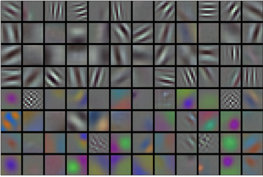

8.1. 深度卷积神经网络（AlexNet）¶
尽管在 LeNet (LeCun et al., 1995) 问世之后， CNN 已在计算机视觉和机器学习界广为人知， 但它们并没有立即主导这一领域。 尽管 LeNet 在早期的小数据集上取得了良好的结果， 但在更大、更真实的数据集上训练 CNN 的性能和可行性仍待确立。 事实上，在20世纪90年代初到 2012年取得分水岭式成果 (Krizhevsky et al., 2012) 之间的大部分时间里， 神经网络经常被其他机器学习方法超越， 例如核方法 (Schölkopf and Smola, 2002)、集成方法 (Freund and Schapire, 1996) 和结构化估计 (Taskar et al., 2004)。
对于计算机视觉来说，这种比较也许并不完全准确。 也就是说，尽管卷积网络的输入 由原始或经过轻度处理（例如中心化）的像素值组成，但实践者从不会把原始像素直接输入传统模型。 相反，典型的计算机视觉流程 由人工设计的特征提取流程组成，例如 SIFT (Lowe, 2004)、SURF (Bay et al., 2006) 和视觉词袋 (Sivic and Zisserman, 2003)。 特征不是被学习出来的，而是被手工设计出来的。 大部分进展一方面来自对特征提取更巧妙的构想， 另一方面来自对几何的深刻洞见 (Hartley and Zisserman, 2000)。学习算法往往被视为事后的补充。
尽管20世纪90年代已经出现了一些神经网络加速器， 但它们的性能尚不足以 构建参数众多的深度多通道、多层 CNN。 例如，NVIDIA 于1999年推出的 GeForce 256 每秒最多只能处理4.8亿次浮点运算（如加法和乘法）（MFLOPS）， 而且除了游戏之外，没有任何有意义的 编程框架可用。如今的加速器每台设备能够执行超过1000 TFLOPs。 此外，当时的数据集仍然相对较小： 对6万幅低分辨率\(28 \times 28\)像素图像做 OCR 曾被视为极具挑战性的任务。 除这些障碍之外，训练神经网络的关键技巧 也仍然缺失，包括参数初始化启发式方法 (Glorot and Bengio, 2010)、 随机梯度下降的巧妙变体 (Kingma and Ba, 2014)、 非压缩型激活函数 (Nair and Hinton, 2010) 以及有效的正则化技术 (Srivastava et al., 2014)。
因此，经典流程并不训练端到端（从像素到分类）的系统， 而更像是这样：
获取一个有趣的数据集。在早期，这类数据集需要昂贵的传感器。例如，1994年的 Apple QuickTake 100 拥有高达0.3兆像素（VGA）的分辨率，最多能存储8幅图像，而价格高达$1000。
基于光学、几何、其他分析工具方面的知识，偶尔还基于幸运的研究生们的偶然发现，用手工设计的特征对数据集进行预处理。
让数据通过一组标准的特征提取器，例如 SIFT（尺度不变特征变换）:cite:Lowe.2004、SURF（加速稳健特征）:cite:Bay.Tuytelaars.Van-Gool.2006，或者任意数量的其他手工调优流程。时至今日，OpenCV 仍然提供 SIFT 提取器！
把得到的表示输入你最喜欢的分类器（很可能是线性模型或核方法），以训练一个分类器。
如果你去问机器学习研究者， 他们会回答说机器学习既重要又优美。 优雅的理论证明了各种分类器 (Boucheron et al., 2005) 的性质，而凸 优化 (Boyd and Vandenberghe, 2004) 已成为获得这些分类器的主流方法。 机器学习领域当时蓬勃发展、严谨且非常有用。然而， 如果你去问计算机视觉研究者， 你会听到完全不同的说法。 他们会告诉你，图像识别不光彩的真相在于： 推动进展的是特征、几何 (Hartley and Zisserman, 2000, Hartley and Kahl, 2009) 和工程， 而不是新颖的学习算法。 计算机视觉研究者有理由相信， 更大或更干净的数据集 或者略微改进的特征提取流程， 对最终准确率而言比任何学习算法都重要得多。
import torch
from torch import nn
from d2l import torch as d2l
from mxnet import init, np, npx
from mxnet.gluon import nn
from d2l import mxnet as d2l
npx.set_np()
import jax
from flax import linen as nn
from jax import numpy as jnp
from d2l import jax as d2l
import tensorflow as tf
from d2l import tensorflow as d2l
8.1.1. 表示学习¶
换一种说法，当时流程中最重要的部分是表示。 而直到2012年，表示大多是机械地计算出来的。 事实上，设计一组新的特征函数、改进结果并写出方法， 在论文中都占有显著地位。 SIFT (Lowe, 2004)、 SURF (Bay et al., 2006)、 HOG（方向梯度直方图）:cite:Dalal.Triggs.2005、 视觉词袋 (Sivic and Zisserman, 2003) 以及类似的特征提取器占据主导地位。
另一组研究者， 包括 Yann LeCun、Geoff Hinton、Yoshua Bengio、 Andrew Ng、Shun-ichi Amari 和 Juergen Schmidhuber， 有着不同的打算。 他们相信特征本身应当被学习。 此外，他们认为特征要足够复杂， 就应当由多个联合学习的层分层组合而成， 每一层都有可学习的参数。 以图像为例，最低的几层可能会逐渐 检测边缘、颜色和纹理，这与动物视觉系统 处理其输入的方式类似。特别地，诸如通过稀疏编码 (Olshausen and Field, 1996) 获得的那类 视觉特征的自动设计，直到现代 CNN 出现之前都仍是一个悬而未决的挑战。 直到 Dean et al. (2012), Le (2013) 之后，从图像数据自动 生成特征的想法才获得了显著关注。
第一个现代 CNN (Krizhevsky et al., 2012)，以 其发明者之一 Alex Krizhevsky 的名字命名为AlexNet，它在很大程度上 是 LeNet 的演进式改进。它在2012年 ImageNet 挑战赛中取得了优异的性能。


图8.1.1 AlexNet 第一层学习到的图像滤波器。经 Krizhevsky et al. (2012) 许可转载。¶
有趣的是，在网络的最低层， 模型学习到的特征提取器与一些传统滤波器相似。 图8.1.1 展示了较低层次的图像描述子。 网络中较高的层可能在这些表示的基础上构建， 以表示更大的结构，如眼睛、鼻子、草叶等。 更高的层甚至可能表示整个物体， 如人、飞机、狗或飞盘。 最终，最后的隐藏状态学习到一种紧凑的图像表示， 它概括了图像的内容， 使得属于不同类别的数据可以很容易地被区分开。
AlexNet（2012）及其前身 LeNet（1995）共享许多架构要素。这不禁让人发问：为什么花了这么长时间？ 一个关键区别在于，在此前的二十年里，可用的数据量和计算能力都显著增加了。因此 AlexNet 大得多：与1995年可用的 CPU 相比，它在多得多的数据上、用快得多的 GPU 进行训练。
8.1.1.1. 缺失的要素：数据¶
具有许多层的深度模型需要大量数据， 才能进入 显著优于基于凸优化的传统方法 （例如线性方法和核方法）的区间。 然而，鉴于计算机存储容量有限、 （成像）传感器相对昂贵， 以及20世纪90年代研究预算相对紧张， 大多数研究依赖于很小的数据集。 许多论文依赖 UCI 数据集集合， 其中很多只包含数百或（少数）数千幅 低分辨率拍摄、背景往往被人为处理干净的图像。
2009年，ImageNet 数据集发布 (Deng et al., 2009)， 它向研究者提出挑战：从100万个样例中学习模型， 这些样例来自1000个不同物体类别、每类1000个。这些类别本身 基于 WordNet (Miller, 1995) 中最流行的名词节点。 ImageNet 团队使用 Google 图片搜索对每个类别的大量候选集合 进行预筛选，并采用 Amazon Mechanical Turk 众包流程 来确认每幅图像是否属于相应类别。 这一规模是前所未有的，比其他数据集高出一个数量级以上 （例如，CIFAR-100 有6万幅图像）。另一个方面是，这些图像具有 \(224 \times 224\)像素的较高分辨率，不像8000万幅规模的 TinyImages 数据集 (Torralba et al., 2008) 那样只包含\(32 \times 32\)像素的缩略图。 这有利于形成更高层次的特征。 相关的竞赛名为 ImageNet 大规模视觉识别挑战赛 （ImageNet Large Scale Visual Recognition Challenge）:cite:russakovsky2015imagenet， 它推动了计算机视觉和机器学习研究的发展， 向研究者提出挑战：在比学术界此前所考虑的更大规模上，哪些模型表现最好。最大的视觉数据集，例如 LAION-5B (Schuhmann et al., 2022)，包含数十亿幅带附加元数据的图像。
8.1.1.2. 缺失的要素：硬件¶
深度学习模型是计算周期的贪婪消费者。 训练可能需要进行数百轮，而每次迭代 都需要让数据穿过许多层计算代价高昂的 线性代数运算。 这是20世纪90年代和21世纪初 更偏好基于优化得更高效的 凸目标的简单算法的主要原因之一。
图形处理器（graphical processing unit，GPU）被证明是 使深度学习成为可能的关键变革者。 这些芯片最初是为加速 图形处理以服务于计算机游戏而开发的。 特别地，它们针对高吞吐量的\(4 \times 4\) 矩阵—向量乘积进行了优化，而许多计算机图形任务正需要这类运算。 幸运的是，这种数学与 计算卷积层所需的数学惊人地相似。 大约在同一时期，NVIDIA 和 ATI 开始针对通用计算运算 优化 GPU (Fernando, 2004)， 甚至将它们作为通用 GPU（general-purpose GPU，GPGPU）来营销。
为了提供一些直观认识，考虑现代微处理器 （CPU）的核。 每个核都相当强大，运行在高时钟频率上， 并配备大容量缓存（最多可达数兆字节的 L3 缓存）。 每个核都擅长执行各种指令， 它带有分支预测器、深流水线、专用执行单元、 推测执行 以及许多其他精巧机制， 使其能够运行大量具有复杂控制流的程序。 然而，这种明显的优势也正是它的致命弱点： 通用核的制造成本非常高。它们擅长处理 具有大量控制流的通用代码。 这需要大量芯片面积，不仅用于 实际执行计算的 ALU（算术逻辑单元），还用于 上述所有精巧机制，再加上 内存接口、核之间的缓存逻辑、 高速互连等等。与专用硬件相比， CPU 在任何单一任务上都相对较差。 现代笔记本电脑有4～8个核， 而即便是高端服务器，每个插槽也很少超过64个核， 原因很简单：这样做不划算。
相比之下，GPU 可以由数千个小型处理单元组成（NVIDIA 最新的 Ampere 芯片有多达6912个 CUDA 核），这些处理单元通常被分组为更大的组（NVIDIA 称之为 warp）。 NVIDIA、AMD、ARM 和其他芯片厂商在细节上有所不同。虽然每个核都相对较弱， 运行频率约为1GHz， 但正是这类核的总数使 GPU 比 CPU 快几个数量级。 例如，NVIDIA 近期的 Ampere A100 GPU 每块芯片在专门的16位精度（BFLOAT16）矩阵—矩阵乘法上提供超过300 TFLOPs 的性能，在更通用的浮点运算（FP32）上最高可达20 TFLOPs。 与此同时，CPU 的浮点性能很少超过1 TFLOPs。例如，Amazon 的 Graviton 3 在16位精度运算上达到2 TFLOPs 的峰值性能，这一数字与 Apple M1 处理器的 GPU 性能相近。
就 FLOPs 而言，GPU 比 CPU 快得多的原因有很多。 第一，功耗往往随时钟频率二次增长。 因此，对于一个运行速度快四倍（一个典型数值）的 CPU 核的功耗预算， 你可以使用16个速度为其\(\frac{1}{4}\)的 GPU 核， 从而获得\(16 \times \frac{1}{4} = 4\)倍的性能。 第二，GPU 核简单得多 （事实上，很长一段时间里它们甚至无法 执行通用代码）， 这使它们更节能。例如，(i) 它们往往不支持推测求值，(ii) 通常无法对每个处理单元单独编程，(iii) 每个核的缓存往往小得多。 最后，深度学习中的许多运算需要高内存带宽。 GPU 在这方面再次占据优势，其总线的宽度至少是许多 CPU 的10倍。
回到2012年。一个重大突破出现了： Alex Krizhevsky 和 Ilya Sutskever 实现了一个可以在 GPU 上运行的深度 CNN。 他们意识到，CNN 中的计算瓶颈—— 卷积和矩阵乘法—— 都是可以在硬件中并行化的运算。 他们使用两块显存为3GB的 NVIDIA GTX 580（其中任何一块都能达到1.5 TFLOPs，这在十年后对大多数 CPU 仍是一项挑战）， 实现了快速卷积。 cuda-convnet 代码 足够好，以至于在几年内 它都是业界标准，并为 深度学习热潮最初几年的发展提供了动力。
8.1.2. AlexNet¶
AlexNet 采用了一个8层 CNN， 以很大优势赢得了2012年 ImageNet 大规模视觉识别挑战赛 (Russakovsky et al., 2013)。 这个网络首次表明， 通过学习获得的特征能够超越手工设计的特征，打破了计算机视觉中此前的范式。
如 图8.1.2 所示，AlexNet 和 LeNet 的架构惊人地相似。 注意，我们提供了 AlexNet 的一个略微精简的版本， 去掉了2012年 为了使模型能装进两块小 GPU 而需要的一些设计怪招。

图8.1.2 从 LeNet（左）到 AlexNet（右）。¶
AlexNet 和 LeNet 之间也存在显著差异。 首先，AlexNet 比相对较小的 LeNet-5 深得多。 AlexNet 由八层组成：五个卷积层、 两个全连接隐藏层和一个全连接输出层。 其次，AlexNet 使用 ReLU 而不是 sigmoid 作为激活函数。下面让我们深入细节。
8.1.2.1. 架构¶
在 AlexNet 的第一层中，卷积窗口形状为\(11\times11\)。 由于 ImageNet 中的图像比 MNIST 图像高、宽各八倍， ImageNet 数据中的目标往往占据更多像素、具有更多视觉细节。 因此，需要更大的卷积窗口来捕捉目标。 第二层的卷积窗口形状 减小为\(5\times5\)，随后是\(3\times3\)。 此外，在第一、第二和第五个卷积层之后， 网络都添加了窗口形状为\(3\times3\)、步幅为2的最大汇聚层。 并且，AlexNet 的卷积通道数比 LeNet 多十倍。
在最后的卷积层之后，有两个巨大的全连接层， 它们各有4096个输出。 这些层需要近1GB的模型参数。 由于早期 GPU 内存有限， 原始 AlexNet 采用了双数据流设计， 使两块 GPU 中的每一块只负责 存储和计算模型的一半。 幸运的是，如今 GPU 内存相对充裕， 因此现在我们很少需要把模型拆分到多个 GPU 上 （我们版本的 AlexNet 模型在这方面 与原论文有所不同）。
8.1.2.2. 激活函数¶
此外，AlexNet 将 sigmoid 激活函数改为更简单的 ReLU 激活函数。一方面，ReLU 激活函数的计算更简单。例如，它没有 sigmoid 激活函数中的指数运算。 另一方面，在使用不同的参数初始化方法时，ReLU 激活函数使模型训练更容易。这是因为，当 sigmoid 激活函数的输出非常接近0或1时，这些区域的梯度几乎为0，导致反向传播无法继续更新模型的某些参数。相比之下，ReLU 激活函数在正区间内的梯度始终为1（5.1.2节）。因此，如果模型参数初始化不当，sigmoid 函数在正区间内可能得到几乎为0的梯度，这意味着模型无法被有效地训练。
8.1.2.3. 容量控制与预处理¶
AlexNet 通过暂退法（dropout，5.6节） 来控制全连接层的模型复杂度， 而 LeNet 只使用了权重衰减。 为了进一步增广数据，AlexNet 的训练循环 加入了大量图像增广， 例如翻转、裁剪和颜色变化。 这使模型更加稳健，而更大的样本量 有效地减少了过拟合。 关于这类预处理步骤的深入综述，请参见 Buslaev et al. (2020)。
class AlexNet(d2l.Classifier):
def __init__(self, lr=0.1, num_classes=10):
super().__init__()
self.save_hyperparameters()
self.net = nn.Sequential(
nn.LazyConv2d(96, kernel_size=11, stride=4, padding=1),
nn.ReLU(), nn.MaxPool2d(kernel_size=3, stride=2),
nn.LazyConv2d(256, kernel_size=5, padding=2), nn.ReLU(),
nn.MaxPool2d(kernel_size=3, stride=2),
nn.LazyConv2d(384, kernel_size=3, padding=1), nn.ReLU(),
nn.LazyConv2d(384, kernel_size=3, padding=1), nn.ReLU(),
nn.LazyConv2d(256, kernel_size=3, padding=1), nn.ReLU(),
nn.MaxPool2d(kernel_size=3, stride=2), nn.Flatten(),
nn.LazyLinear(4096), nn.ReLU(), nn.Dropout(p=0.5),
nn.LazyLinear(4096), nn.ReLU(),nn.Dropout(p=0.5),
nn.LazyLinear(num_classes))
self.net.apply(d2l.init_cnn)
class AlexNet(d2l.Classifier):
def __init__(self, lr=0.1, num_classes=10):
super().__init__()
self.save_hyperparameters()
self.net = nn.Sequential()
self.net.add(
nn.Conv2D(96, kernel_size=11, strides=4, activation='relu'),
nn.MaxPool2D(pool_size=3, strides=2),
nn.Conv2D(256, kernel_size=5, padding=2, activation='relu'),
nn.MaxPool2D(pool_size=3, strides=2),
nn.Conv2D(384, kernel_size=3, padding=1, activation='relu'),
nn.Conv2D(384, kernel_size=3, padding=1, activation='relu'),
nn.Conv2D(256, kernel_size=3, padding=1, activation='relu'),
nn.MaxPool2D(pool_size=3, strides=2),
nn.Dense(4096, activation='relu'), nn.Dropout(0.5),
nn.Dense(4096, activation='relu'), nn.Dropout(0.5),
nn.Dense(num_classes))
self.net.initialize(init.Xavier())
class AlexNet(d2l.Classifier):
lr: float = 0.1
num_classes: int = 10
training: bool = True
def setup(self):
self.net = nn.Sequential([
nn.Conv(features=96, kernel_size=(11, 11), strides=4, padding=1),
nn.relu,
lambda x: nn.max_pool(x, window_shape=(3, 3), strides=(2, 2)),
nn.Conv(features=256, kernel_size=(5, 5)),
nn.relu,
lambda x: nn.max_pool(x, window_shape=(3, 3), strides=(2, 2)),
nn.Conv(features=384, kernel_size=(3, 3)), nn.relu,
nn.Conv(features=384, kernel_size=(3, 3)), nn.relu,
nn.Conv(features=256, kernel_size=(3, 3)), nn.relu,
lambda x: nn.max_pool(x, window_shape=(3, 3), strides=(2, 2)),
lambda x: x.reshape((x.shape[0], -1)), # flatten
nn.Dense(features=4096),
nn.relu,
nn.Dropout(0.5, deterministic=not self.training),
nn.Dense(features=4096),
nn.relu,
nn.Dropout(0.5, deterministic=not self.training),
nn.Dense(features=self.num_classes)
])
class AlexNet(d2l.Classifier):
def __init__(self, lr=0.1, num_classes=10):
super().__init__()
self.save_hyperparameters()
self.net = tf.keras.models.Sequential([
tf.keras.layers.Conv2D(filters=96, kernel_size=11, strides=4,
activation='relu'),
tf.keras.layers.MaxPool2D(pool_size=3, strides=2),
tf.keras.layers.Conv2D(filters=256, kernel_size=5, padding='same',
activation='relu'),
tf.keras.layers.MaxPool2D(pool_size=3, strides=2),
tf.keras.layers.Conv2D(filters=384, kernel_size=3, padding='same',
activation='relu'),
tf.keras.layers.Conv2D(filters=384, kernel_size=3, padding='same',
activation='relu'),
tf.keras.layers.Conv2D(filters=256, kernel_size=3, padding='same',
activation='relu'),
tf.keras.layers.MaxPool2D(pool_size=3, strides=2),
tf.keras.layers.Flatten(),
tf.keras.layers.Dense(4096, activation='relu'),
tf.keras.layers.Dropout(0.5),
tf.keras.layers.Dense(4096, activation='relu'),
tf.keras.layers.Dropout(0.5),
tf.keras.layers.Dense(num_classes)])
我们构造一个高度和宽度都为224的单通道数据实例，以观察每一层的输出形状。它与 图8.1.2 中的 AlexNet 架构相符。
AlexNet().layer_summary((1, 1, 224, 224))
AlexNet().layer_summary((1, 1, 224, 224))
AlexNet(training=False).layer_summary((1, 224, 224, 1))
AlexNet().layer_summary((1, 224, 224, 1))
8.1.3. 训练¶
尽管 Krizhevsky et al. (2012) 中的 AlexNet 是在
ImageNet 上训练的， 但这里我们使用 Fashion-MNIST， 因为即便在现代 GPU
上，训练一个 ImageNet 模型直到收敛 也可能需要数小时甚至数天。 将 AlexNet
直接应用于Fashion-MNIST的问题之一是，
它的图像分辨率更低（\(28 \times 28\)像素）， 比 ImageNet
图像低。 为了让它工作，我们将它们上采样到\(224 \times 224\)。
这通常并不是明智的做法，因为它只是增加了计算
复杂度而没有增加信息。尽管如此，我们在这里这样做是为了忠实于 AlexNet
架构。
我们通过d2l.FashionMNIST构造函数中的resize参数来执行这种调整大小。
现在，我们可以开始训练 AlexNet 了。 与 7.6节 中的 LeNet 相比， 这里的主要变化是使用了更小的学习率， 以及由于网络更深更宽、 图像分辨率更高、卷积代价更高而慢得多的训练。
model = AlexNet(lr=0.01)
data = d2l.FashionMNIST(batch_size=128, resize=(224, 224))
trainer = d2l.Trainer(max_epochs=10, num_gpus=1)
trainer.fit(model, data)
model = AlexNet(lr=0.01)
data = d2l.FashionMNIST(batch_size=128, resize=(224, 224))
trainer = d2l.Trainer(max_epochs=10, num_gpus=1)
trainer.fit(model, data)
model = AlexNet(lr=0.01)
data = d2l.FashionMNIST(batch_size=128, resize=(224, 224))
trainer = d2l.Trainer(max_epochs=10, num_gpus=1)
trainer.fit(model, data)
trainer = d2l.Trainer(max_epochs=10)
data = d2l.FashionMNIST(batch_size=128, resize=(224, 224))
with d2l.try_gpu():
model = AlexNet(lr=0.01)
trainer.fit(model, data)
8.1.4. 讨论¶
AlexNet 的结构与 LeNet 惊人地相似，但有几项关键改进，既有针对准确率的（暂退法），也有针对训练便利性的（ReLU）。同样引人注目的是深度学习工具方面取得的巨大进展。2012年需要数月的工作，如今使用任何现代框架只需十几行代码就能完成。
回顾该架构，我们看到 AlexNet 在效率上有一个致命弱点：最后两个隐藏层分别需要大小为\(6400 \times 4096\)和\(4096 \times 4096\)的矩阵。这对应164 MB 内存和81 MFLOPs 计算量，二者都是不小的开销，尤其是在手机等较小的设备上。这是 AlexNet 被我们将在后续小节介绍的更有效的架构所超越的原因之一。尽管如此，它是从浅层网络迈向如今所用的深层网络的关键一步。注意，尽管在我们的实验中参数数量远远超过训练数据量（最后两层有超过4000万个参数，而训练数据集只有6万幅图像），却几乎没有过拟合：在整个训练过程中，训练损失和验证损失几乎相同。这归功于现代深度网络设计中固有的改进型正则化（如暂退法）。
虽然 AlexNet 的实现看起来只比 LeNet 多几行代码，但学术界花了很多年才接受这一概念上的变化，并利用其出色的实验结果。这也是由于当时缺乏高效的计算工具。那时 DistBelief (Dean et al., 2012) 和 Caffe (Jia et al., 2014) 都还不存在，而 Theano (Bergstra et al., 2010) 仍缺少许多显著特性。正是 TensorFlow (Abadi et al., 2016) 的出现才使局面发生了巨大变化。
8.1.5. 练习¶
接续上面的讨论，分析 AlexNet 的计算特性。
分别计算卷积和全连接层的内存占用。哪一个占主导？
计算卷积和全连接层的计算代价。
内存（读写带宽、延迟、容量）如何影响计算？它对训练和推理的影响有差别吗？
你是一名芯片设计者，需要在计算和内存带宽之间进行权衡。例如，更快的芯片需要更多功耗，可能需要更大的芯片面积。更多内存带宽需要更多引脚和控制逻辑，因而也需要更多面积。你会如何优化？
为什么工程师不再报告 AlexNet 的性能基准？
尝试增加训练 AlexNet 的轮数。与 LeNet 相比，结果有何不同？为什么？
AlexNet 对于 Fashion-MNIST 数据集可能过于复杂，尤其是由于初始图像分辨率较低。
尝试简化模型以加快训练，同时确保准确率不会显著下降。
设计一个能直接处理\(28 \times 28\)图像的更好的模型。
修改批量大小，观察吞吐量（图像/秒）、准确率和 GPU 内存的变化。
将暂退法和 ReLU 应用于 LeNet-5。效果有改善吗？你能否通过预处理来利用图像固有的不变性，从而进一步改善结果？
你能让 AlexNet 过拟合吗？你需要移除或改变哪个特性才能破坏训练？